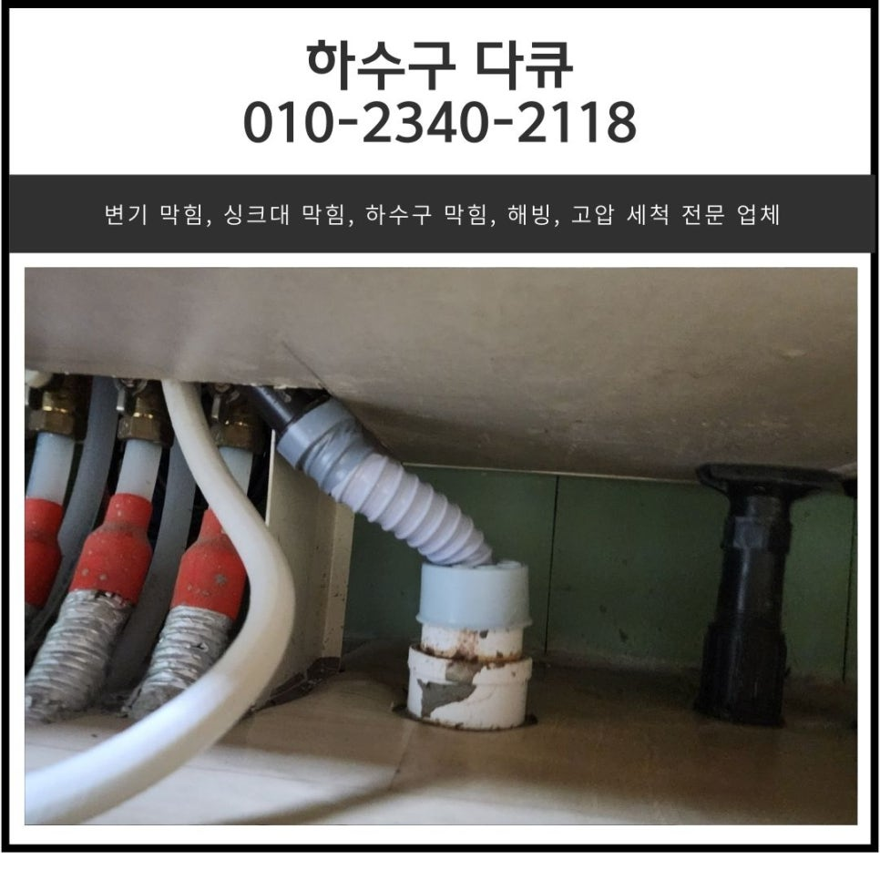
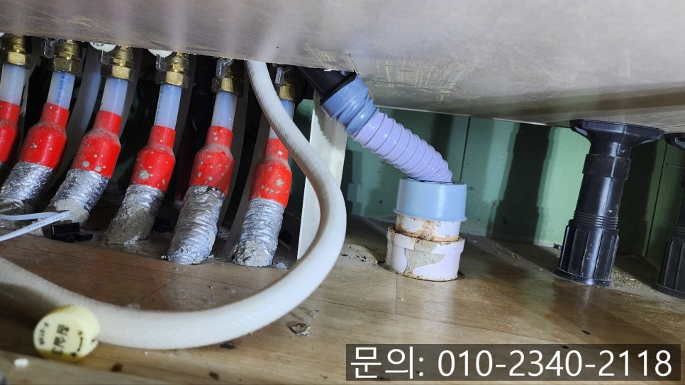
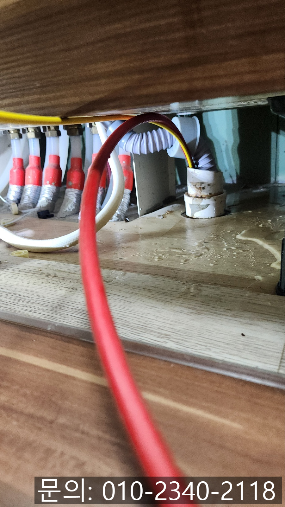
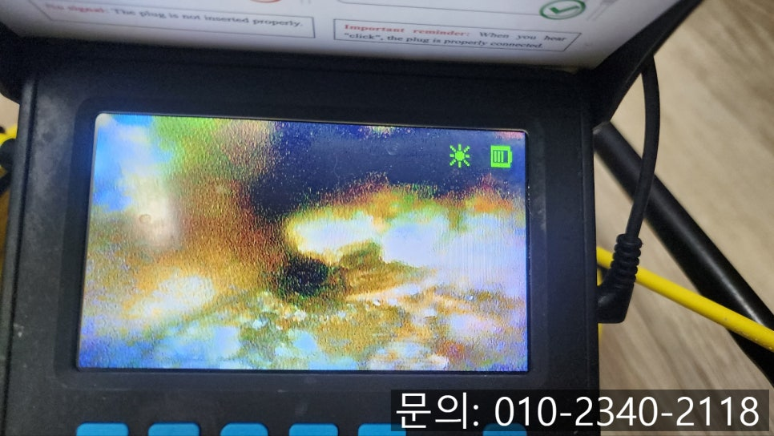
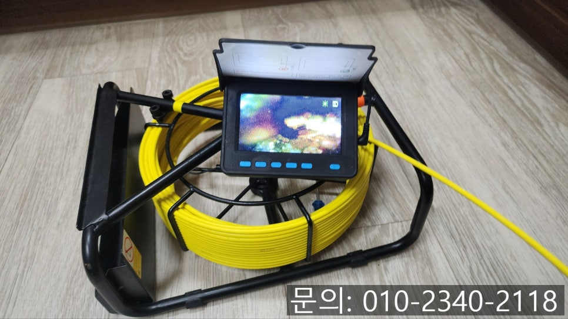
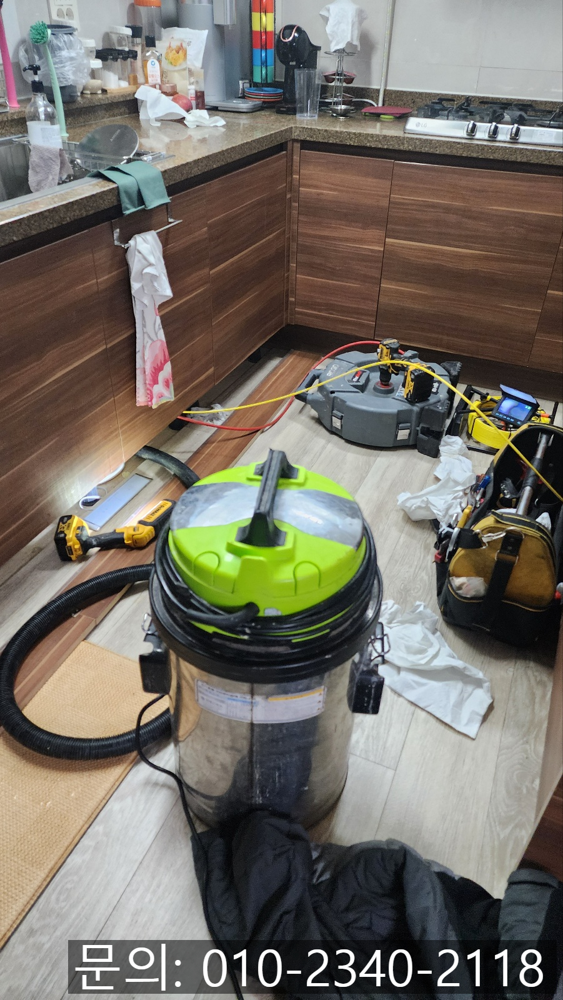
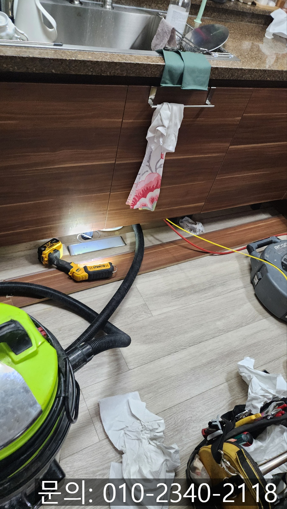

🏠 장안면 싱크대 역류 화성 정남면 하수구 배관 막힘 뚫는 전문 설비업체
화성 장안면 싱크대막힘 전문 시공 후기

📋 작업 개요
- 위치: 화성 장안면, 장안면, 화성
- 서비스 유형: 싱크대막힘, 하수구막힘, 배관막힘, 역류해결, 뚫는업체, 배관청소
- 작업 일시: 2024. 12. 22. 13:56
- 업체명: 하수구수사대 (010-5615-2118)
🔍 문제 상황
안녕하세요.
장안면 싱크대 역류, 화성 정남면 하수구 배관 막힘 뚫는 전문 설비 업체 하수구 다큐입니다.
건물에 매립되어 있는 하수구는 우리가 가정이나 회사 등 건물에서 사용한 폐수를 건물 밖으로 흘려보내주는 역할을 해주면서 우리의 생활을 편하게 만들어줍니다.
아무래도 건물 내부에 매립되어 있어 눈에 보이지 않다 보니 평소에는 신경 쓰지 않다가도 장안면 싱크대 역류나 화성 정남면 하수구 배관 막힘 등 문제가 발생하게 되면 여러 가지 불편함을 느끼시면서 하수구의 중요성을 느끼실 거예요.
오늘 화성 정남면 하수구 배관 막힘 뚫는 전문 설비업체 하수구 다큐가 포스팅해 드릴 현장 역시 싱크대 배관을 평소에 관리하고 신경 써야 한다는 것을 모르고 사용하시다가 싱크대에서 배수 속도가 느려지면서 다이소에서 쉽게 구할 수 있는 배수구 클리너 등을 부어 해결해 보려고 하셨지만 해결되지 않아 연락을 주셨는데요.
같은 동네에 거주하시는 지인분께 소개를 받아 바로 방문해달라고 요청하셨어요.
현장점검

🔎 원인 분석
💡 전문가 진단: 현장점검
장안면 싱크대 역류로 연락을 받고 거의 40분 만에 현장에 도착해 장비를 챙겨 올라갔어요.
주방으로 들어가 어떤 문제가 있는지 점검을 시작했습니다.
싱크대와 배관이 연결된 부분부터 살펴보니 물을 사용하면 물이 역류하고 있는 상태로 빠른 해결이 필요해 보였습니다.
정확한 원인이 무엇인지 직접 눈으로 확인해야 하다 보니 내시경 카메라를 진입시켜 확인해 보기로 했어요.
내시경 카메라가 장안면 싱크대 역류 배관 내부로 진입하자 기름 슬러지를 어렵지 않게 확인할 수 있었습니다.
고객님께서 이사 오시고 4년 동안 한 번도 배관 청소를 해본 적이 없다고 말씀해 주셨는데요.
4년 넘게 쌓인 이물질들이 배관을 막고 있어 통수가 전혀 되지 않아 물을 사용하면 역류하는 것 같았습니다.
화성 정남면 하수구 배관 막힘 뚫는 전문 설비업체 하수구 다큐는 고객님께 내시경 카메라를 이용해 촬영한 배관 내부의 상태를 보여드리면서 기름 슬러지를 제거하는 방법에 대해 설명해 드렸어요.

🔧 작업 과정
설명을 모두 들으신 고객님께서는 싱크대가 막혀보니 너무 불편하다며 배관을 막고 있는 기름 슬러지를 모두 제거해달라고 요청하셨어요.
몇 년간 쌓인 기름 슬러지의 양이 많다 보니 플렉스 샤프트 장비와 석션을 이용해 이물질을 모두 제거하기로 했습니다.
플렉스 샤프트는 노즐 끝에 달려있는 체인이 본체에 연결되어 있는 전동드릴의 힘을 받아 배관 내부에서 빠르게 회전하며 배관 벽면에 붙어있는 이물질을 타격해 떨어트려주는 역할을 합니다.
이렇게 떨어진 기름 슬러지들은 석션을 사용해 빨아드려 완벽하게 제거하는 작업을 진행해 드렸어요.
한참을 플렉스 샤프트와 석션을 사용해 작업을 진행하자 많은 양의 기름 슬러지를 제거할 수 있었습니다.
내시경으로 다시 검수하자 아직 제거되지 못한 이물질들이 남아있어 추가로 작업을 진행했습니다.
한참을 반복해 배관에 남아있던 잔여 이물질을 모두 제거해 드렸어요.
다시 한번 내시경으로 청소된 배관을 고객님과 함께 꼼꼼하게 점검해 봤는데요.
기름 슬러지가 많이 쌓여있던 배관이 맞나 싶을 정도로 깨끗해진 배관을 확인할 수 있었습니다.
마지막으로 많은 양의 물을 흘려보내며 배관에 아무런 이상이 없는 것을 확인하고 작업을 마무리할 수 있었습니다.
주방을 사용하다 보면 싱크대 막힘이 발생할 수밖에 없는데요.
수많은 설비 업체 중 정말 일 잘하는 업체를 선정하기는 쉽지 않으실 거예요.


✅ 작업 완료
화성 하수구 막힘 전문 설비 업체 하수구 다큐는 전문 장비를 이용해 원인을 파악하고 문제를 해결해 드리고 있습니다.
지금 하수구 막힘으로 고민하고 계신다면 연락 주세요.
시원하게 뚫어드리겠습니다.
경기도 화성시 동탄대로 677-10 7층 715-A10호




⚠️ 주방 싱크대 배관 막힘 예방 수칙
- ✅ 기름기가 묻은 식기나 프라이팬은 설거지 전 키친타올로 반드시 기름때를 닦아내세요.
- ✅ 주기적으로 싱크대 개수대에 뜨거운 물을 가득 받아 한 번에 내려 배관 내부 기름을 씻어내세요.
- ✅ 배수구 거름망을 미세한 필터로 사용하시고 음식물 찌꺼기가 틈으로 새어 들지 않게 관리하세요.
- ✅ 베이킹소다와 식초를 뜨거운 물과 함께 일주일에 한 번씩 부어주면 배관 살균과 막힘 예방에 좋습니다.
💡 핵심 정리
- 확실한 장비 작업(내시경 점검 및 샤프트 스케일링)으로 원인을 뿌리 뽑습니다.
- 작업 후 1년 이내에 동일한 부위 재발 시 100% 무상 A/S 서비스를 보장합니다.
- 서울 · 경기 · 인천 전 지역에 24시간 언제든 긴급 출동할 수 있도록 항시 대기 중입니다.
❓ 자주 묻는 질문 (FAQ)
🚨 화성 장안면 싱크대막힘 문제로 고민이신가요?
정확한 원인 진단과 확실한 시공으로 재발 없는 해결을 약속드립니다.
24시간 긴급 출동 | 서울 · 경기 · 인천 전지역 | 1년 내 재발 시 무상 A/S